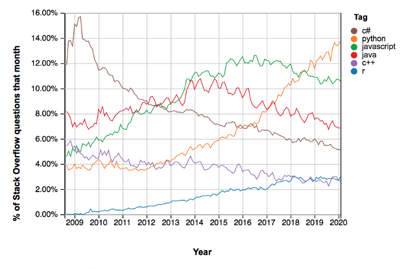
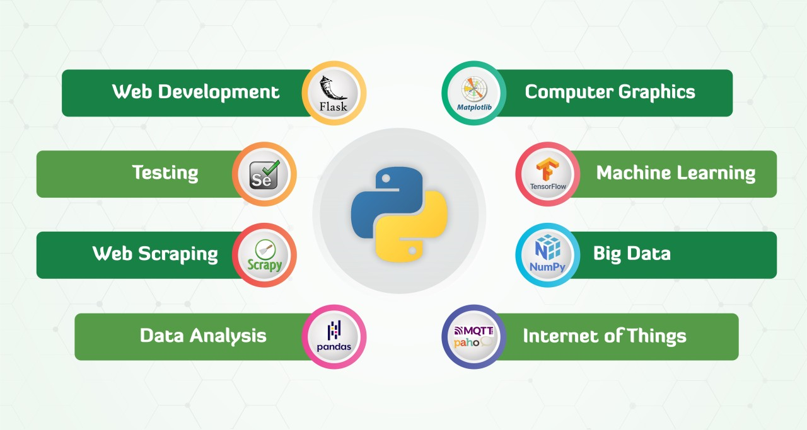

Python's Popularity - What Stats Say?
The success of Python is reflecting in the Stack Overflow trends, which compute numerous tags in posts on the platform. Given the size of StackOverflow, this is simply a great sign for python language high popularity.

Why is Python considered language of the future ?

In today’s, fast technological advancements, programming languages, applications, and services become obsolete in no time. A company designs, develops, tests and by the time it releases its flagship app, only to find that the app is not attracting users.
In the last couple of years, Python’s demand has increased many folds. Most of the platforms are becoming python focused only due to ease, speed of deployment, productivity, and community support. Students are being introduced to Python at the school level itself. Python is often the first language taught in Computer Science courses because of its simplicity.
Python is a stable and versatile programming language used in automation and web development. It is also the future of Networking as it can read, write and configure routers. There are many libraries for networking too. For Machine Learning, there is no specific programming language. Python is the most suitable and popular language that is highly used in Machine Learning.
Python lies amid a scripting and a full programming language. This makes it more flexible and therefore, future proof. It is definite that we will see unceasing growth of Python in all the current and future technologies. Python has become the first choice of beginners and job seekers for learning and attracting job interviews.
 Blog
Home
Matplotlib info
Pandas info
Python is Future ?
Interpreter
Blog
Home
Matplotlib info
Pandas info
Python is Future ?
Interpreter